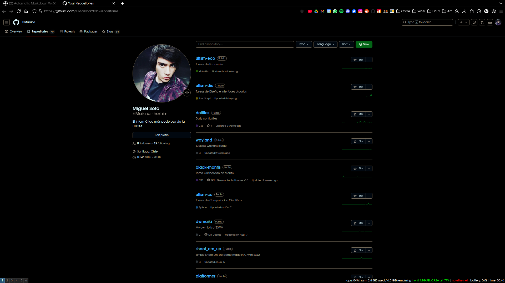
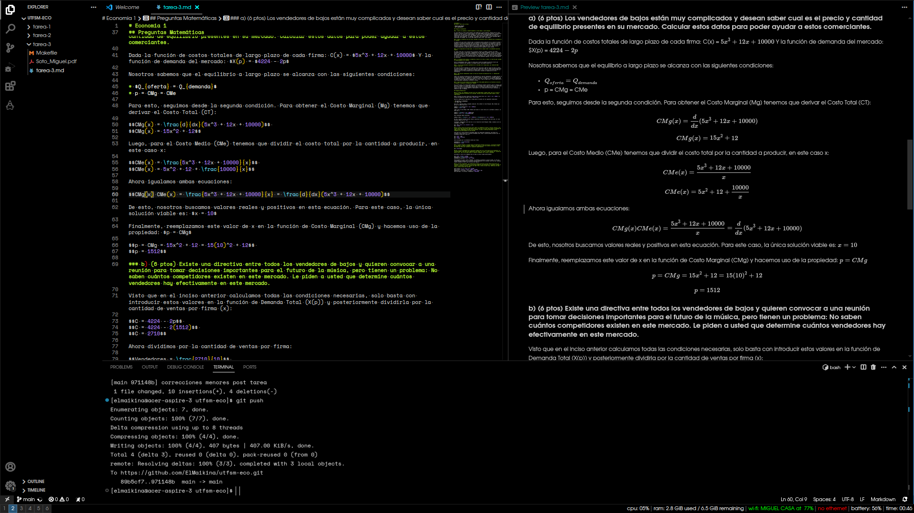
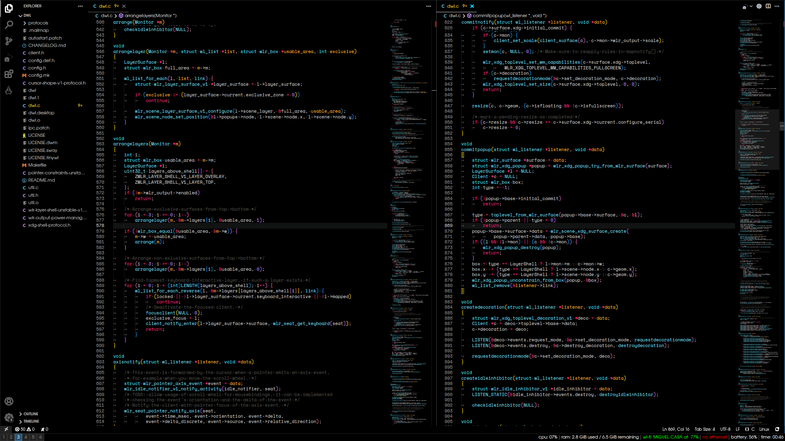
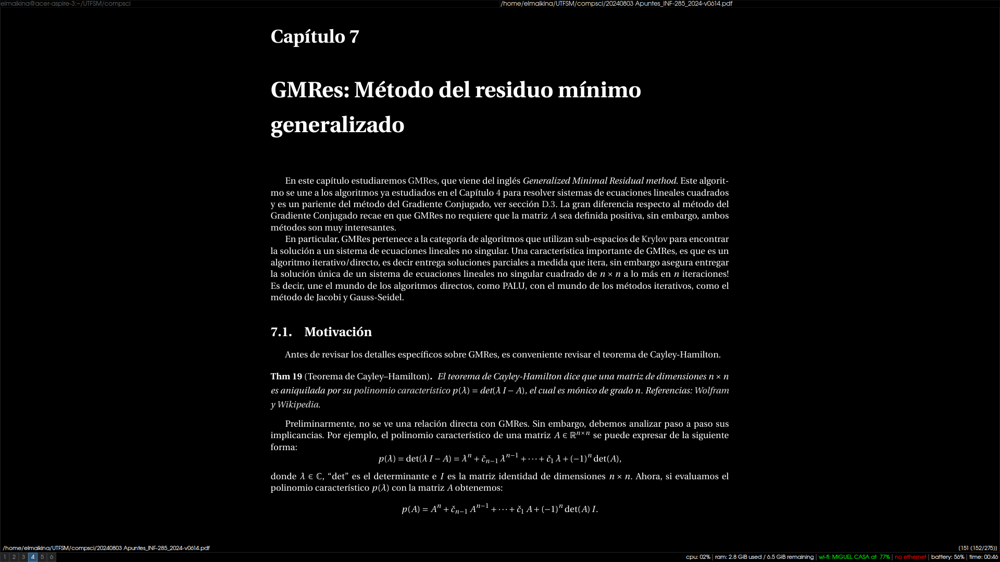
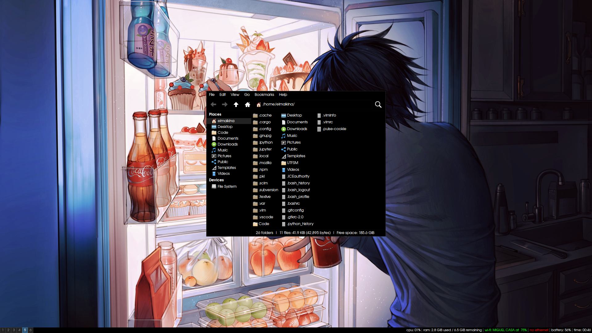
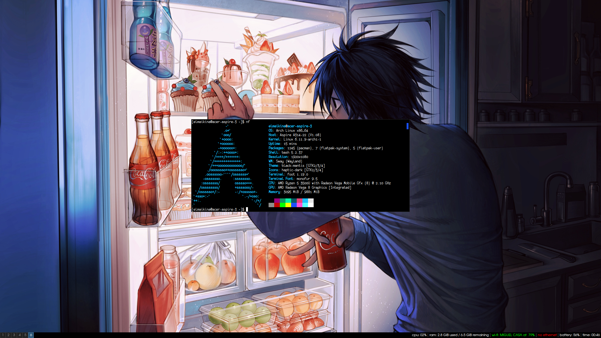

Dotfiles optimizados para mi flujo de trabajo. El enfoque es el uso de un Tiling Window Manager y de Terminal, a veces incluso usando la tty pura. Esta metodologia permite trabajar usando casi puramente el teclado. Tambien hay algunas optimizaciones para nvidia, steam, wayland y aceleracion por GPU.
Herramientas que uso para agilizar mi trabajo, las elegi ya que en su mayoria son sencillas, rapidas y Open Source, por ende tienen amplio soporte y documentacion.
Se usan en ambientes graficos
Se usan desde el terminal
El archivo enviroment contiene algunas variables destinadas a dar alto rendimiento y compatibilidad con wayland, haciendo uso de aceleracion por hardware. Otras variables tambien ofrecen optimizaciones para tarjetas graficas nvidia.
Las fuentes las elegi porque son bonitas y porque se distinguen en DPIs bajos, lo cual brinda mejor uso del espacio independiente de la resolucion de la pantalla. Sumado a esto, hay un archivo fonts.conf que mejora el renderizado de todas las fuentes del sistema, ayudando la legibilidad y estetica.
Previamente usaba mi propio CSS para firefox, ahora mismo estoy usando basado en este: https://github.com/Dook97/firefox-qutebrowser-userchrome/tree/master por temas de minimalismo y eficiencia.
Para instalar los paquetes en pkglist.txt hay que ejecutar el siguiente comando:
pacman -S --needed - < pkglist.txt(Sacado directo de la ArchWiki)
     